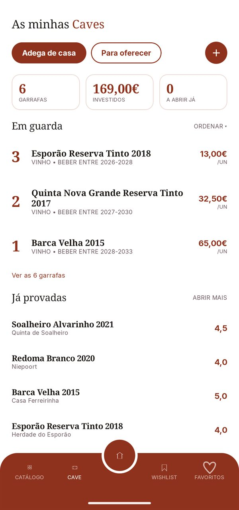
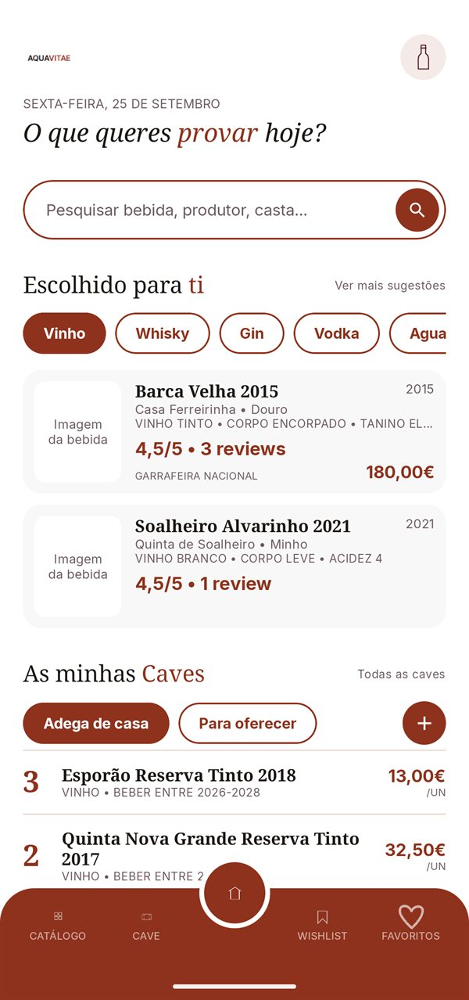
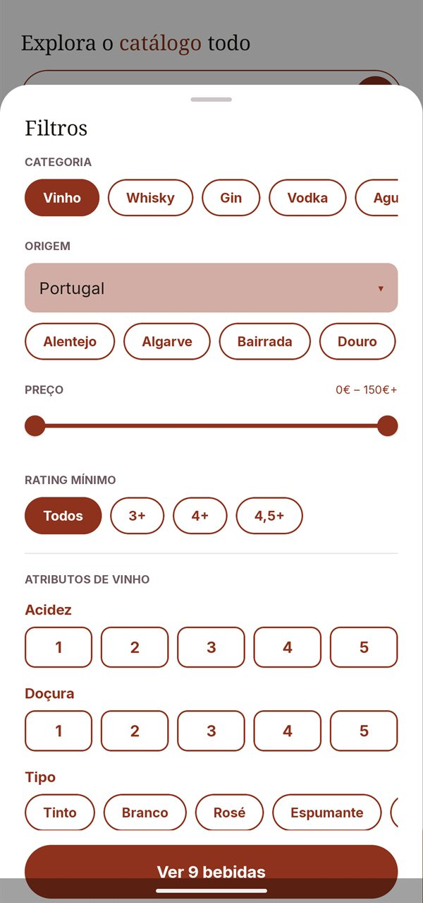
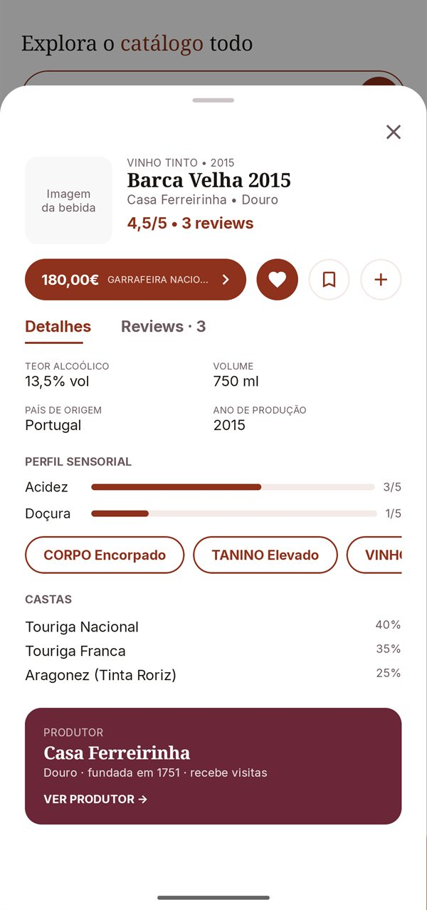
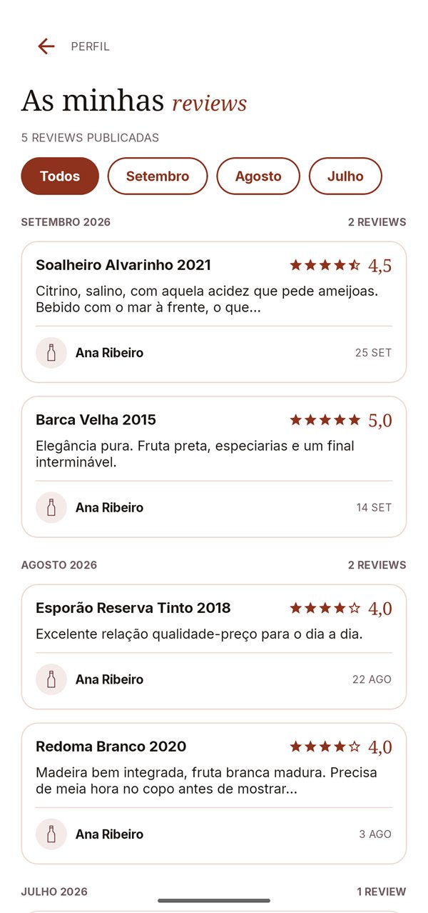
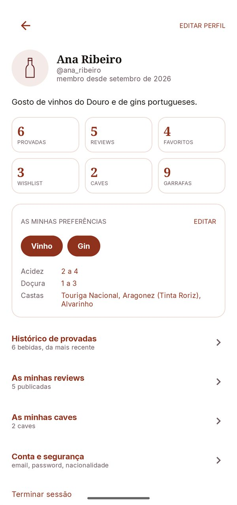

Catálogo e filtros
Vinhos e espirituosas com pesquisa e filtros por categoria, origem, preço, rating e características.
A AquaVitae é uma app para catalogar e descobrir vinhos, whiskies, gins e outras bebidas espirituosas — com foco no mercado e nos produtores portugueses.
Ainda não está disponível na Google Play. Lançamento previsto: em breve.

O que é a AquaVitae
A AquaVitae é uma app Android de catalogação e comunidade para vinhos, whiskies, gins, vodkas, aguardentes e licores. Reúne num só sítio a informação de cada garrafa — produtor, região, castas, teor alcoólico, perfil sensorial — e as opiniões de quem já a provou.
Filtras por categoria, região, preço e rating, guardas as garrafas na tua cave virtual, marcas o que já provaste e escreves reviews. A app sugere-te bebidas com base nas tuas preferências e mostra onde as comprar, em lojas online.
Nasce em Portugal, com os produtores portugueses no centro: cada produtor tem a sua página, com a história, a região e as garrafas que tem no catálogo.





Imagens da versão de testes da app, com dados de demonstração. A versão final pode ser diferente.
Como funciona
Sem complicações: encontras, provas, guardas e, se quiseres, compras.
Pesquisa por nome, produtor ou casta e filtra o catálogo até encontrares o que procuras.
Marca o que já provaste e escreve a tua review, com estrelas e comentário.
Guarda as garrafas nas tuas caves, com o preço pago e a altura em que as queres beber.
Vê onde comprar e segue para a loja. A compra é feita sempre no site do retalhista.
Funcionalidades
Vinhos e espirituosas com pesquisa e filtros por categoria, origem, preço, rating e características.
Sugestões com base nas categorias, castas, acidez e doçura que preferes.
Controla as garrafas, o preço pago, o valor investido e a janela ideal de consumo.
Regista o que provaste e partilha a tua opinião, só de bebidas que já provaste.
Guarda num toque as bebidas de que mais gostas e revê a tua nota.
Uma lista do que queres provar, com o preço mais baixo à vista.
Páginas com a história, a região, as visitas e as garrafas de cada produtor.
As ofertas de lojas online num só sítio, com o preço e a disponibilidade.
Estado do projeto
A AquaVitae está em desenvolvimento ativo. Este é o ponto da situação.
Transparência
A AquaVitae mostra ligações para lojas online parceiras. Se comprares através de algumas delas, podemos receber uma pequena comissão, sem qualquer custo adicional para ti. As avaliações são dos utilizadores e a ordenação do catálogo não depende de comissões.
A AquaVitae destina-se a maiores de 18 anos. Não vendemos bebidas alcoólicas nem incentivamos o consumo excessivo. O álcool é prejudicial à saúde: consome com moderação e, se beberes, não conduzas.
Só pedimos o que a app precisa para funcionar, não vendemos dados e podes apagar a conta, e tudo o que guardaste, na própria app. Lê a Política de Privacidade e os Termos de Utilização.
Contacto
Escreve-nos. Ouvimos com gosto quem produz, vende ou simplesmente gosta de provar.
aquavitaerecovery@gmail.com